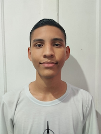

Dylan Janesky Calderon Machado | WDD 130
Hello! My name is Dylan Calderon and I'm from Ciudad Bolivar, Venezuela but I currently reside in São Paulo, Brazil. I love playing basketball and drawing. I am currently studying Web Development at BYU-Pathway. I am excited to learn more about programming, since I think that will open a lot of opportunities for me. I'm trying to improve my english, and BYU-Pathway has helped me a lot! I will server a mission in 2026 nad im really excited for it, I know that it is an opportunity for me to improve and help others to have the blessings of the gospel in their lives! I try to become atleast 1% better every day, because I know that overtime that 1% will make a big difference in the end.